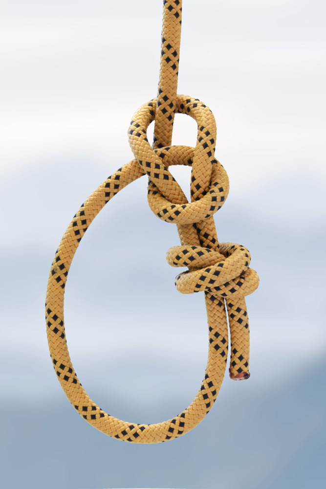
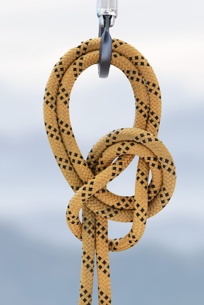
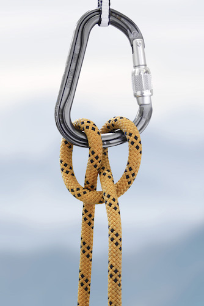
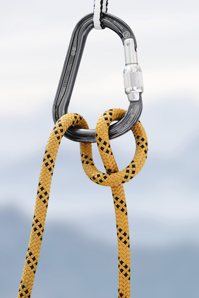
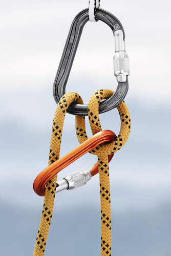
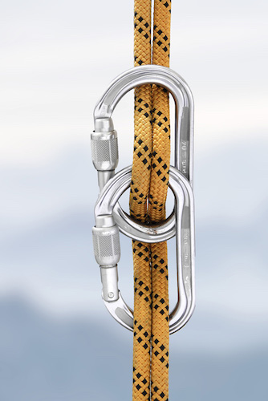
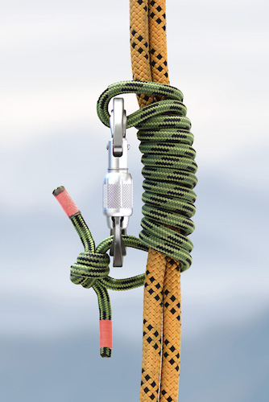
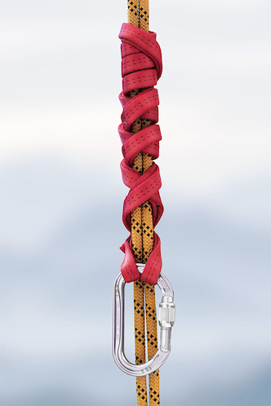
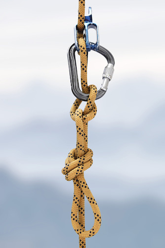

Préambule
Cette formation a pour objectif de préparer un grimpeur déjà autonome en falaise et en grande voie
à réagir dans une situation d’accident ou d’incident. Les techniques choisies permettront de faire face aux cas les plus courants.
Chaque situation est différente et il existe une multitude de techniques de secours sur corde qui ne seront pas abordées ici.
Les manœuvres peuvent paraître simples mais elles s’oublient vite, donc n’hésitez pas à les revoir et à vous entraîner régulièrement: ce référentiel est fait pour ça !
C’est un aide-mémoire destiné aux grimpeurs ayant participé à la formation.
Dans une situation d’urgence, il vous faudra être sûr de vous avant de commencer une manip de corde.
Si vous avez le moindre doute, mieux vaut appeler les secours que faire une manœuvre dont vous ne vous souvenez que vaguement. Attention au suraccident !
De même, la partie qui traite des gestes de premiers secours n’est pas exhaustive et ne se substitue en aucun cas à un avis médical.
Principes de base
TOUJOURS SUR DEUX POINTS
Dans l’urgence, on peut être amené à improviser. Néanmoins il faut toujours garder en tête quelques principes de base:
-
Jamais de frottement textile sur textile: la dyneema en particulier a une très faible résistance à la chaleur.
On peut brûler une sangle de dyneema en quelques secondes en la frottant contre une corde.
-
Attention aux frottements de la corde sur le rocher.
Un frottement est acceptable s’il n’affecte pas toujours la même partie de la corde.
-
Attention, un mousqueton qui travaille mal perd de sa résistance.
Pour bien travailler, un mousqueton doit être bien fermé, forcer dans le bon sens, ne pas frotter contre le rocher et ne pas être en porte-à-faux.
Quelques noeuds
Un noeud doit toujours être serré et propre pour être efficace.
On serre un noeud en le prenant dans une main et en tirant chaque brin avec l’autre main.
Un noeud d'arrêt est toujours un demi pêcheur double.

Chaise
Le noeud de chaise est utilisé pour fixer le bout d’une corde à un objet
(ancrage, arbre, etc.) ou pour s’encorder. Il comprend obligatoirement un
noeud d'arrêt.
Avantages
Inconvénients
-
Peut se défaire s’il est sollicité longtemps sans tension, ne pas l’utiliser
pour s’encorder en grande voie.

Chaise double
Le chaise double est utilisé pour fixer le milieu d’une corde à un objet, ou
pour trianguler deux points avec ses deux boucles
Avantages
- Se règle facilement même après sa conception.
- Se défait facilement.
Inconvénients
- Nécessite un noeud d'arrêt s’il est fait en bout de corde.
- Plus difficile à contrôler.

Cabestan
Le noeud de base à maîtriser absolument.S’il est fait en bout de corde, il nécessite un noeud d'arrêt.
Avantages
- Peut être fait à une main.
- Rapide à faire.
- Peut s’ajuster facilement sans le défaire.
- Nécessite très peu de corde.
Inconvénients
- Peut être difficile à défaire.

Demi-cabestan
Le demi-cabestan peut servir à assurer du bas, assurer du haut, faire descendre un second, descendre en rappel, etc.
Avantages
- Rapide à faire.
- Polyvalent.
Inconvénients
- Vrille les cordes.
- Pas très pratique sur corde à double.

Demi-cabestan autobloquant
Le demi-cabestan autobloquant sert à assurer un second du haut en mode autobloquant.
On l’utilise pour remplacer un système d’assurage perdu
Avantages
- Possibilité de le transformer en demi-cabestan facilement (et vice versa).
Inconvénients
- Impossible à débrayer sous tension.
- Vrille les cordes.
- Pas très pratique sur corde à double.
- Peut être capricieux en fonction des mousquetons utilisés, à surveiller!

Bicéphale
Le bicéphale sert à descendre en rappel quand on a perdu son descendeur.
Avantages
- Se réalise avec seulement deux mousquetons.
- Ne vrille pas les cordes
Inconvénients
- Pas beaucoup de freinage avec des cordes fines ou neuves: nécessite absolument un autobloquant en plus.

Machard
Le machard est un noeud autobloquant bidirectionnel. Il se réalise avec un anneau de cordelette de 6mm.
Avantages
- Facile à débrayer.
- Bidirectionnel.
Inconvénients
- Peut ne pas bloquer si on ne fait pas assez de tours.

Français
Le français est un noeud autobloquant unidirectionnel. Il se réalise avec un anneau de cordelette de 6mm.
Avantages
Inconvénients
- Difficile à débrayer une fois sous tension.
- Unidirectionnel, attention au sens de réalisation.

Machard tressé avec une sangle
On l’utilise pour descendre sur une corde tendue.
On le réalise avec une sangle de 120cm la plus large possible, de préférence en nylon.
Avantages
- Se débraye très facilement même sous tension.
Inconvénients
- Prend de la place.
- Long à réaliser.

Noeud de mule
Le noeud de mule est utilisé pour verrouiller un système d’assurage (reverso, demi-cabestan, etc.).
C’est l’un des seuls noeuds qui peut être défait sous tension.
Avantages
- Facile et rapide à réaliser.
Inconvénients
- Gourmand en corde.
- Peut être capricieux quand on le défait, nécessite du doigté !
Les mouflages
Les réchapes
Les remonttées sur corde
Le rappel
Faire redescendre un second en grande voie
Relais sur deux points espacés